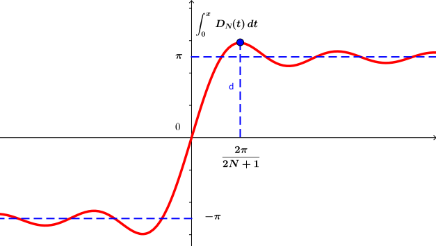

2.6. Gibbs Olgusu
Kayıt Tarihi:
Son Güncelleme:
Bu derste Fourier serilerinin yakınsaklığı ile ilgili ilginç bir detaya dikkat çekeceğiz. Gibbs olgusu dediğimiz bu durum bize Fourier serisinin kaç adımı hesaplanırsa hesaplansın, bazı noktalarda fonksiyona %91'den fazla yaklaşılamayacağını söyler. Üstelik bu %9'luk hata payı her fonksiyon ve her aralıkta her Fourier serisi için aynıdır.
Anahtar Kelimeler: Fourier serisi · Gibbs olgusu · yakınsaklıkUygulamada bir fonksiyona onun Fourier serisi yardımıyla yaklaşımda bulunurken onun sadece sonlu sayıda terimini hesaplarız ve ne kadar fazla terimi hesaba katarsak o kadar iyi bir yaklaşımda bulunmayı umarız. Ne yazık ki Fourier serilerinde durum böyle değil, bu seriler genel durumda düzgün yakınsak değildir. Ayrıca bu seriler için daha da ilginç bir durum söz konusu, şimdi bu durumu inceleyeceğiz.
1898 yılında Chicago Üniversitesinden A. A. Michelson ve S. W. Stratton isimli araştırmacılar Nature dergisine gönderdikleri bir çalışmalarında, $(-\pi,\pi)$ aralığında $f(x):=x$ fonksiyonunun Fourier serisi üzerine Harmonic Analyzer isimli makineleriyle yaptıkları ölçümler sonucunda $160$ terim bile hesaplasalar kısmi toplamlar dizisinin toplamının sıçrama noktalarına yakın noktalarda gerçek değere yeterince yakın olmadıklarını bildirdiler. Bir yıl sonra Yale Üniversitesinden Josiah Willard Gibbs aynı dergiye bu konuda bir açıklama gönderdi. Gibbs bu açıklamasında aynı fonksiyonu ele aldı ve süreksizlik noktaları olan $x_0=(2k+1)\pi$ ($k\in\mathbb{Z}$) noktalarının bir komşuluğunda yeterince büyük bir $N$ sayısı için $$s_N(x_1)\approx1.18\pi=f(x+)+0.18\pi\quad\text{ve}\quad s_N(x_2)\approx-1.18\pi=f(x-)-0.18\pi$$ olacak şekilde $x_1\lt x_0$ ve $x_2\gt x_0$ sayıları mevcut olduğunu gösterdi. Yani $x_1$ ve $x_2$ noktalarında serinin toplamı $x_0$ noktasında fonksiyonun gerçek değerinden $0.18\pi$ kadar farklıdır, yani $x_0$ noktasındaki sıçrama boyunun $\%9$'u kadar. İşin ilginç kısmı ise Gibbs bu $\%9$ oranının her Fourier serisinde her süreksizlik noktasında aynı sabit oran olduğunu, ayrıca $N$ sayısını ne kadar büyük seçersek seçelim bu oranın yine sabit kaldığını gösterdi. Sonradan Gibbs'in gösterdiği bu gerçeğin daha önce 1848 yılında Henry Wilbraham tarafından yayınlandığı anlaşıldı fakat Gibbs'in açıklamasına kadar bu çalışma hiç farkedilmemişti, bundan dolayı günümüzde bu gerçeğe Gibbs olgusu diyoruz.
Şekil 2.6: $f(x):=x$ fonksiyonu üzerinde Gibbs olgusu
Şimdi üzerinde Gibbs olgusunu gözlemlemek üzere $$f(x):=\left\{ \begin{array}{ll} 0, \quad & -\pi\lt x\lt 0\text{ ise}\\ 2\pi, \quad & \;\;\;0\leq x\lt\pi\text{ ise} \end{array} \right.$$ fonksiyonunu ele alalım. Teorem 2.4.1 gereği bu fonksiyonun Fourier serisi$$f(x):=\left\{ \begin{array}{ll} f(x), \quad & x\in(-\pi,\pi)\backslash\{0\}\text{ ise}\\ \pi, \quad & x=0\text{ ise} \end{array} \right.$$ fonksiyonuna yakınsar. Şimdi Lemma 2.4.1 ile verilen eşitlikleri kullanarak \begin{eqnarray*} s_N(x) &=& \frac{1}{2\pi}\int_{-\pi}^{\pi}f(t)D_N(t-x)\,dt\\ &=& \int_{0}^{\pi}D_N(t-x)\,dt\\ &=& \int_{-x}^{\pi-x}D_N(u)\,du\\ &=& \int_{-x}^{0}D_N(u)\,du+\int_{0}^{\pi}D_N(u)\,du+\int_{\pi}^{\pi-x}D_N(u)\,du\\ &=& \int_{0}^{x}D_N(u)\,du\;+\;\pi\;+\;\int_{\pi}^{\pi-x}D_N(u)\,du \end{eqnarray*} olduğunu gözlemleyelim. Yukarıdaki eşitlikteki son integrale dikkat edersek, integrasyon aralığında $D_N(u)$ fonksiyonu integrallenebilir olduğundan Riemann-Lebesgue teoremi gereği $N\rightarrow\infty$ için bu integral sıfıra yakınsar. $S_N(x)$ toplamının süreksizlik noktası olan sıfır noktası yakınlarındaki davranışı ile ilgilendiğimizden yeterince küçük $x$ ve yeterince büyük $N$ sayıları için $$s_N(x)\approx\int_0^xD_N(t)\,dt+\pi$$ yazabiliriz.

Şekil 2.7: Yukarıda tanımladığımız $f$ fonksiyonu için Dirichlet çekirdeği ve onun integrali
Yukarıdaki grafiklere dikkat edersek pozitif yarı düzlemde $D_N(t)$ eğrisinin altında kalan alanın $x=\frac{2\pi}{2N+1}$ noktasına kadar arttığını ve bu noktadan sonra bir noktaya kadar azalıp tekrar artmaya başladığı ve bu şekilde salındığı anlaşılır. Dirichlet çekirdeği çift bir fonksiyon olduğundan negatif yarı eksendeki davranışı da buradan kestirilebilir. Bundan dolayı $\int_0^xD_N$ fonksiyonunun ilk maksimum değerini kestirmeliyiz, çünkü bu maksimum değeri en büyük olanıdır.
Şimdi önce $$\int_{0}^{x}\frac{\sin\left(N+\frac{1}{2}\right)t}{\sin\frac{1}{2}t}dt=2\int_{0}^{x}\frac{\sin\left(N+\frac{1}{2}\right)t}{t}dt+\int_{0}^{x}\frac{t-2\sin\frac{1}{2}t}{t\sin\frac{1}{2}t}\sin\left(N+\frac{1}{2}\right)t\,dt$$ eşitliğini gözlemleyelim. Buradaki $$\frac{t-2\sin\frac{1}{2}t}{t\sin\frac{1}{2}t}$$ terimi yeterince küçük $x$ sayıları için $(0,x)$ aralığında süreklidir ve $t\rightarrow0$ olduğu açıktır, dolayısıyla Riemann-Lebesgue teoremi gereği $N\rightarrow\infty$ için yukarıdaki son integral sıfıra yakınsar. Böylece yeterince küçük $x$ ve yeterince büyük $N$ sayıları için $$s_N(x)\approx2\int_{0}^{x}\frac{\sin\left(N+\frac{1}{2}\right)t}{t}dt+\pi=2\int_{0}^{\left(N+\frac{1}{2}\right)x}\frac{\sin u}{u}\,du$$ olduğu elde edilir.
Eğer $$\phi(x):=2\int_{0}^{\left(N+\frac{1}{2}\right)x}\frac{\sin u}{u}\,du\;+\;\pi$$ olarak tanımlarsak $$\phi'(x)=\left\{ \begin{array}{ll} 2\frac{\sin\left(N+\frac{1}{2}\right)x}{x}, \quad & x\neq0\text{ ise}\\ 2N+1, \quad & x=0\text{ ise} \end{array} \right.$$ olduğu gösterilebilir. Ayrıca bu fonksiyon birinci türevinin sıfır olduğu $$x=\frac{k\pi}{N+1/2}$$ noktalarında yerel extremum değerlere sahiptir, ikinci türev testi kullanılarak $k=\ldots,-6,-4,-2,1,3,5,\ldots$ noktalarında yerel maksimum ve $k=\ldots, -5,-3,-1,2,4,6,\ldots$ noktalarında yerel minimum değerlerine sahip olduğu gösterilebilir. $k=1$ için $x=\pi/(N+1/2)$ noktasındaki yerel maksimum değeri $$\phi\left(\frac{\pi}{N+1/2}\right)=2\int_{0}^{\pi}\frac{\sin u}{u}du+\pi\approx1.18\pi+\pi=1.09(2\pi)$$ olarak hesaplanır, integral değeri yaklaşık değerdir, bir integral tablosu veya bir sayısal yöntem kullanılabilir.
Şekil 2.8: Yukarıda tanımladığımız $\phi$ fonksiyonu
Dikkat edilirse yukarıdaki değer $N$ sayısından bağımsızdır, $N\rightarrow\infty$ için de yaklaşık olarak $2.18\pi$ değeri elde edilir.
Elbette bir kaç fonksiyonun Fourier derisinde Gibbs olgusunun görülmesi bu olgunun her fonksiyonda karşımıza çıkacağı anlamına gelmez. Fakat 1906 yılında Harvard Üniversitesinden Maxime Bocher (1867-1918) bu olgunun her fonksiyonda oluştuğunu kanıtladı.
2.5. Herhangi Bir Aralıkta Fourier Serileri
Fourier Analizi
2.7. Fejer Serileri